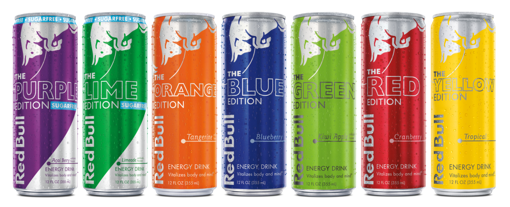

|
Energy drinks have the effects that caffeine and sugar provide, but experts still argue about the possible effects
of the other ingredients.[18] Most of the effects of energy drinks on cognitive performance, such as increased attention and reaction
speed, are primarily due to the presence of caffeine.[32] There is evidence that energy drinks can increase mental[33][34][35] and
athletic[36][37] performance. Performance during prolonged driving is increased after consumption of Red Bull.[35] Other tests for
physical performance showed results such as increased endurance and power. Red Bull energy drink increased upper body muscle endurance
during repeated Wingate tests in young healthy adults.[38] Excessive or repeated consumption of energy drinks can lead to cardiac and
psychiatric conditions.[15][16]
|
|  |